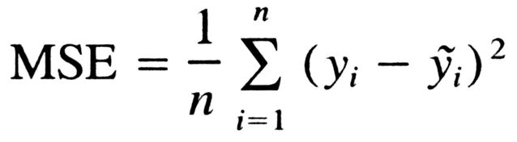
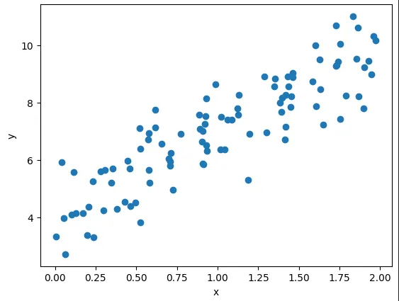
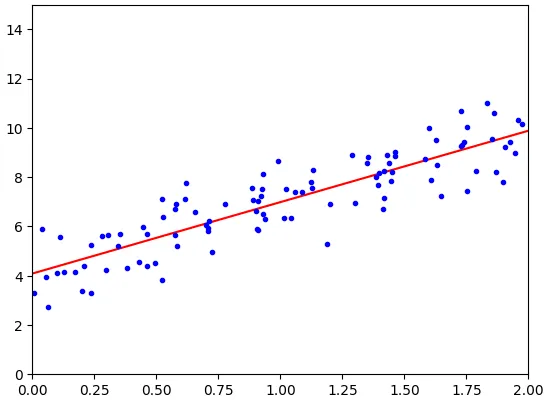
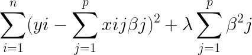
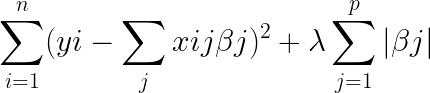
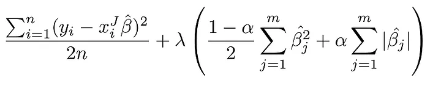
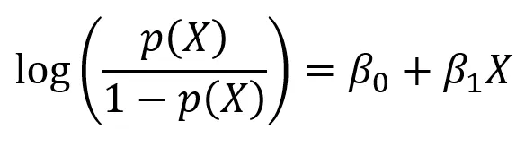
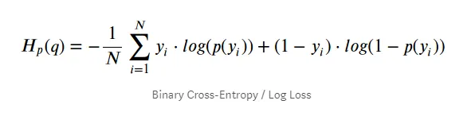

← ← ← 5/20/2024, 7:12:23 AM | Posted by: Lorenzo Battistela
6 min read
Regression algorithms are widely used in the world of Data Science and Machine Learning. In my previous articles, I explained Linear and Multiple Linear regression. But that’s not all. To close the regression topic, today I’ll cover different types of regression algorithms, what they do and how to use them. Let’s dive in!
As explained in my previous articles, a simple linear regression model makes a prediction by a ponderated sum of input features plus a constant called polarization term (or linear coefficient). Training a model means configure your parameters to be the best fit on the training set. For this to be done, we have to measure how good or bad the model is adapting to data. To train a linear regression model, we are finding the value that minimizes MSE (medium square error). The function can be described as

To find the value of theta that minimizes the cost function, we can use the least squares method:
Where theta is the vector that minimizes the cost function and y is the vector of target values from y1 ym. Let’s look closely to an example in python:
import numpy as np
import matplotlib.pyplot as plt
X = 2\* np.random.rand(100,1)
y = 4 + 3 \* X + np.random.randn(100,1)
plt.scatter(X, y)
plt.xlabel('x')
plt.ylabel('y')
plt.show()

First, we generate our data points and plot them to see what they look like. The function we used to generate our data points is _y = 4 + 3x + gaussian noise ._Now, we’re going to apply the formula mentioned above to find the best theta value for our data points:
X_b = np.c_[np.ones((100,1)), X] # adds x0 = 1 to each instance
theta_best = np.linalg.inv(X_b.T.dot(X_b)).dot(X_b.T).dot(y)
theta_best
# array([[4.00634639], [2.94157425]])
We can see that we did not get 4 and 3, which should be the result, but it was close enough (we didn’t get it exactly because of gaussian noise).
Let’s plot some prediction points as a line and understand how our model fit training data:

We can see that our line fits data points pretty well for a simple linear model. The computational complexity for this is heavy (typically O(n²) to O(n³) for inverting a matrix). The predictions are fast O(n).
We can see that our data points were really simple in the previous model. But what if our data does not fit a simple straight line? Well, we can use a linear model to fit non-linear data. A simple way to do this is adding powers of each feature as new features, and train a linear model in this extended set of features. This technique is called Polynomial Regression.
We can do this using PolynomialFeatures from scikit learn library. For example:
from sklearn.preprocessing import PolynomialFeatures
m = 100
X = 6 * np.random.rand(m, 1) - 3
y = 0.5 * X**2 + X + 2 + np.random.randn(m, 1)
poly_features = PolynomialFeatures(degree=2, include_bias=false)
X_poly = poly_features.fit_transform(X)
X_poly[0]
# array([-0.752734872, 0.5666234])
Using PolynomialFeatures allow us to add the square of each feature to the training model (in this case we have just one feature). Now, X_poly has the original feature X plus X squared. Note that when we have many features, Polynomial Regression is capable of finding relationships between them (something that a Linear Regression cannot do). This is possible because PolynomialFeatures also adds all combinations of features to the degree provided. This means if we had a and b with degree=3, we would have:
a², a³, b², b³, ab, a²b, ab²
Ridge regression is a regularized version of linear regression. In general, for linear models, regularization is done by restricting model weights. In Ridge, a regularization term is added to the cost function. The hyperparameter used controls how much you want to regularize the model. Closer to 1, weights will end up close to 0 and the line close to the average. The polarization term is not regularized. An easy way to execute a ridge regression is:
from sklearn.linear_model import Ridge
# assuming you already have X and y
ridge_reg = Ridge(alpha=1, solver="cholesky")
ridge_reg.fit(X, y)
ridge_reg.predict([[1.5]]) # predicting some value

It is also a regularized version of linear regression, and it adds a regularization term to the cost functions, but it uses the norm l1 to the weight instead of the half of the square of the norm l2. Lasso regression tends to eliminate completely the weights of features with less importance (adjust them to 0). It automatically executes feature selection and displays a sparse model (few feature weights != 0).
from sklearn.linear_model import Lasso
lasso_reg = Lasso(alpha=0.1)
lasso_reg.fit(X, y)
lasso_reg.predict([[1.5]])
# array([8.28714555])

It is a mid term between Ridge and Lasso. The regularization term is simply a mix of the regularization terms of Ridge and Lasso, and you can control the ‘mixing rate’ r. When r=0, Elastic Net is the same thing as Ridge, and r=1 it is equal to Lasso.
from sklearn.linear_model import ElasticNet
# l1 ratio l1_ratio is mixing tax
elastic_net = ElasticNet(alpha=0.1, l1_ratio=0.5)
elastic_net.fit(X,y)
elastic_net.predict([[1.5]])
# array([8.18453219])

To choose between regression, we need to take some things in account. Generally speaking, it is not good to use linear regression without any regularization. Ridge is a good pattern, but if you can tell that some features are useless, you can choose between Lasso and Elastic Net, since they tend to reduce useless features to 0. In general, Elastic Net is preferable to Lasso, that can behave wrongly when feature number is higher than training instances number or highly correlated features.
Commonly used to estimate the probability of an instance belong to a determined category. It calculates the ponderated sum of input features and it generates the logistic of this result.

The cost relation with all training set is simply the average cost related to all training instances, and it is written in an expression called log loss:

Logistic regression can be generalized for multiple classes directly without the need to train and combine many binary classifiers. This is called Softmax Regression, or Multinomial Logistic Regression.
Given an instance x, softmax model will calculated a punctuation sk(x) to each class k, and then estimate the probability for each class applying the softmax function (normalized exponential) to the punctuations. Once calculated, you can estimate the probability of Phat k of an instance to belong to the class k. It calculates the exponencial of each punctuation and normalizes it by dividing it by the sum of all exponentials.
Regression algorithms are used very often to study and to predict linear (and even non linear) data. Linear regression is the most common, but it is important to know that different cases require different algorithms. That said, it is important to know how other algorithms work, so you can pick the right one when needed! Thanks for reading it, see you next week!
— Lorenzo
Mãos à Obra: Aprendizado de Máquina com Scikit-Learn & TensorFlow — Aurélien Geron